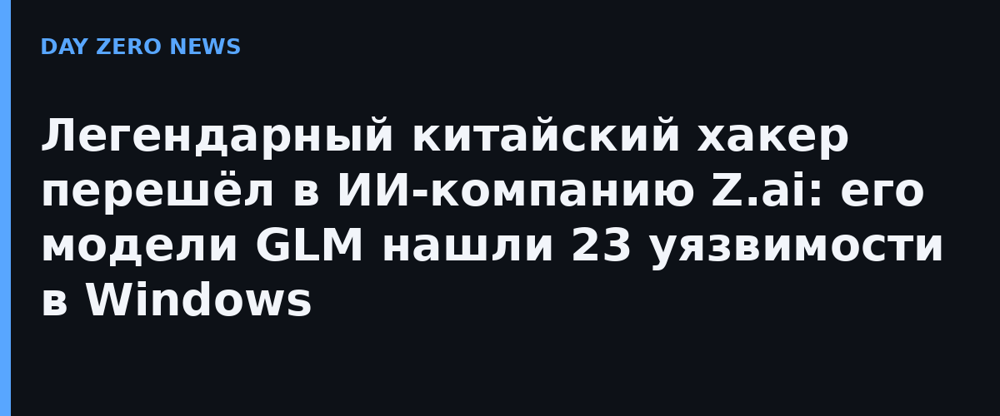

Юки Чен,Более 15 лет занимающийся поиском уязвимостей в программном и оборудовании, объявил о переходе в Z.ai (бывшая Zhipu AI — первая крупная китайская LLM-компания, вышедшая на биржу) коротким постом: «Новое путешествие, новая миссия!» Компания подтвердила назначение в официальном заявлении и пообещала, что «десятилетия его исследований уязвимостей помогали и будут помогать сообществу строить более безопасное киберпространство с GLM».
Главная строчка в резюме Чена:недавно он с помощью флагманских моделей GLM обнаружил 23 уязвимости в операционной системе Windows. Microsoft подтвердила все находки — то есть речь не о автоотчёте генератора, а о реально принятых вендором багах. Правда, в анонсе Z.ai не уточнила, сколько в работе людей, а сколько — самой модели: этот вопрос SCMP отдельно отмечает как открытый.
Найм выглядит логичным на фоне событий последних месяцев: ИИ-агенты уже фигурировали в реальных инцидентах — от самостоятельных попыток агентов облака Tencent «взломать» сервис Alibaba до подобных случаев у OpenAI и Anthropic. А ещё раньше релиз GLM-5.3 задерживали именно из-за тревог вокруг её кибервозможностей: по открытому реестру раскрытий модели приписывают тысячи найденных уязвимостей в открытых проектах. Теперь Z.ai явно делает ставку на «безопасный» вектор: frontier-модель плюс хакер-легенда, который направит эти возможности в оборону.
Кейс — наглядный пример новой тенденции: крупные ИИ-лаборатории переманивают security-исследователей не для Red Team «для галочки», а потому что модели уже реально находят уязвимости, и без опытного человека рядом не понять, где помощь, а где галлюцинация. Для индустрии это значит одно: рынок труда на стыке ИИ и инфобеза перегревается быстрее, чем сами модели успевают проходить аудит.